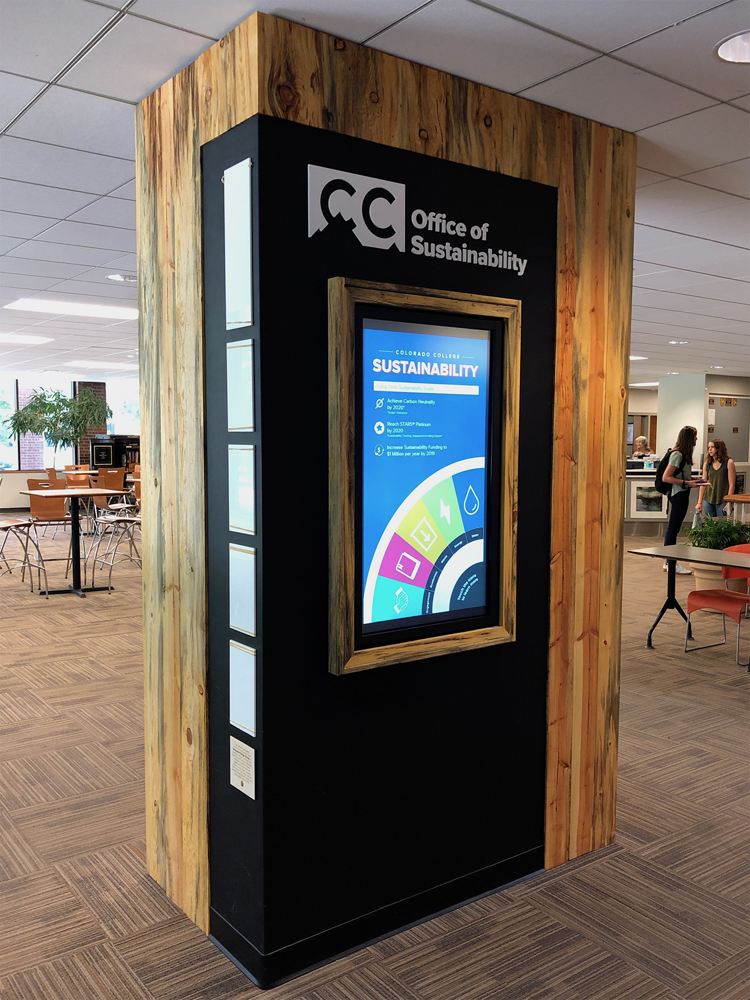
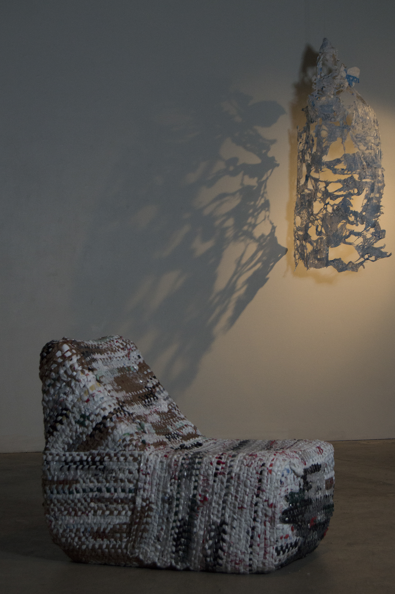
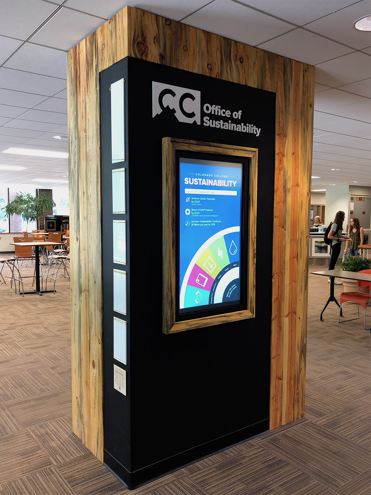
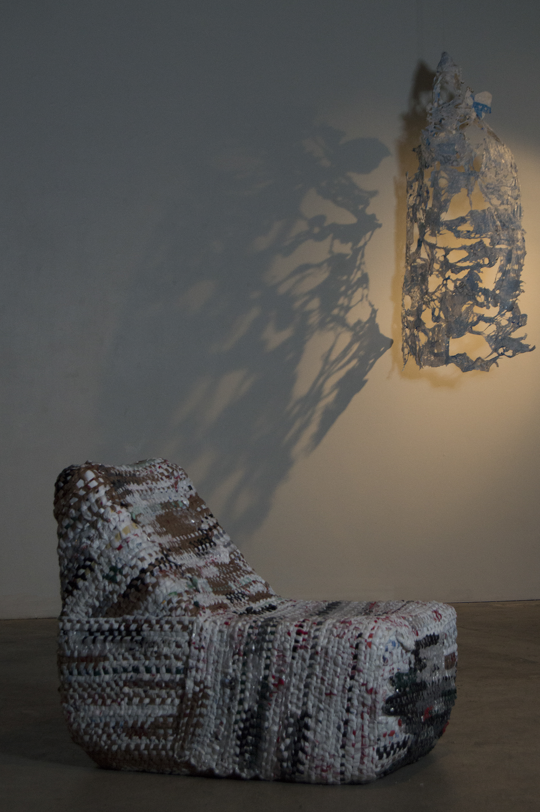

This multi-purpose chair was designed during a week-long Furniture Design scholarship at Anderson Ranch in Aspen, Summer 2018. The chair is built out of 3/4" plywood and joined together with domino joints. It is hand-painted with old-fashioned milk paints.


With Cory Page, I co-led this project during the 2016-2017 school year with the Integrative Design Group at Colorado College. We revived the Office of Sustainaibility's dinky bulletin board wall in the Worner Campus center in order to promote the Office of Sustianability's overall message and events. The wall was constructed using local beetle kill wood and recycled acrylic from around campus. We worked with campus facilities to cut, measure, finish, and paint the wall, and we cut the white acrylic sign using a laser cutter. We also worked on branding for the office, selecting colors and fonts that were cohesive with overall school branding and the Office of Sustianability's overall message. We also created poster designs that use half of a typical poster size in an effort to waste less paper.
This woven plastic chair was created as part of my senior thesis show titled "Malleable". I carved the chair out of glued pieces of insulating foam. I then hand-knit a 'sweater' for the chair out of recycled plastic bags. It was a tedious process but very gratifying upon completion.